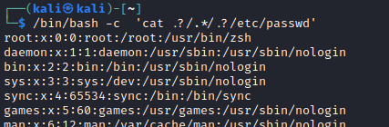
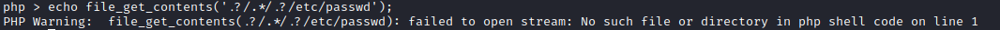
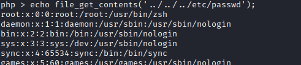
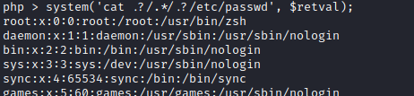

Preventing Directory Traversal
Preventing Directory Traversal
Directory Traversal could potentially allow attackers to:
• Read /etc/passwd
• find SSH Keys or know valid user names for a password spray attack
• Find other services on the box such as Tomcat and read the tomcat-users.xml file
• Discover valid PHP Session Cookies and perform session hijacking
• Read current web application configuration and source code
Pull out only the Filename
The best way to prevent directory traversal is to use programming language's (or framework's) built-in tool to pull only the filename.
PHP •
basename() read the path and only return the filename portion. If only a filename is given, then it will return just the filename. If just the path is given, it will treat whatever is after the final / as the filename.
CONS: ◇ if the application needs to enter any directories, it will not be able to do it.
ATTENTION with custom functions
With custom functions is possible that are not accounted edge cases
Example To understand: 1) Go in a bash terminal, home directly (
cd ~) and run the command
cat .?/.*/.?/etc/passwd.
▪ As we can see Bash allows for for the
? and
* wildcards to be used as a
..  2) Now type
php -a to enter the PHP Command Line interpreter and run
echo file_get_contents('.?/.*/.?/etc/passwd'); ▪ As we can see PHP give an ERROR
 ▪ if you replace
? and
* with
., the command will work as expected
 3)
Edge cases with our above function: if we have PHP execute bash with the system() function, the attacker would be able to bypass our directory traversal prevention
system('cat .?/.*/.?/etc/passwd', $retval);  Sanitize the user input
• To recursively remove any attempts of traversing directories:
◇
PHP If the WebApp function does
path.replaceAll('../', ''). The attacker can circumvent it by trying
....//, because of that the inner
../ is removed from the function but leaving
../ Solution is
▪ completely reject strings that contain forbidden sequences
▪ recursively apply the normalisation function
while(substr_count($input, '../', 0)) {
$input = str_replace('../', '', $input);
}; This code recursively removes ../ sub-strings, so even if the resulting string contains ../ it would still remove it, which would prevent bypasses
Validate that the input starts with an allowed base directory
Possible attack:
Bypass: Only Approved PathsJAVA•
getCanonicalPath() +
startsWith() validate the canonical path of a file based on user input
File file = new File(BASE_DIRECTORY, userInput);
if (file.getCanonicalPath().startsWith(BASE_DIRECTORY)) {
// process file
}
◇
getCanonicalPath() → removes the ‘.’ ‘..’ from the path. sanitize the user input to remove any attempts of traversing directories